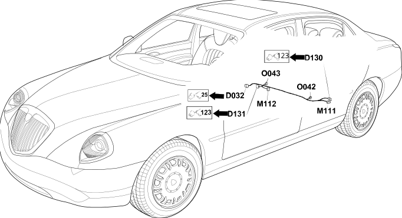

96 rear seat
- Path
- Electrical equipment > Wiring > 96 rear seat
- Kind
- wiring harness
- Applies to
- all engines; all production periods
- Interactive page
- https://sloeber94.github.io/elrnDB-lThss/en/#/207420
Applies to: all engines; all production periods

Topics that link to this page (7)
- D032 Rear/rear seat coupling(REAR)
- D130 Left rear backrest cushion coupling(REAR SEAT)
- D131 Right rear backrest cushion coupling(REAR SEAT)
- M111 Left rear seat heater control unit(REAR SEAT)
- M112 Right rear seat heater control unit(REAR SEAT)
- O042 Left rear seat heater pad with sensor(REAR SEAT)
- O043 Right rear seat heater pad with sensor(REAR SEAT)